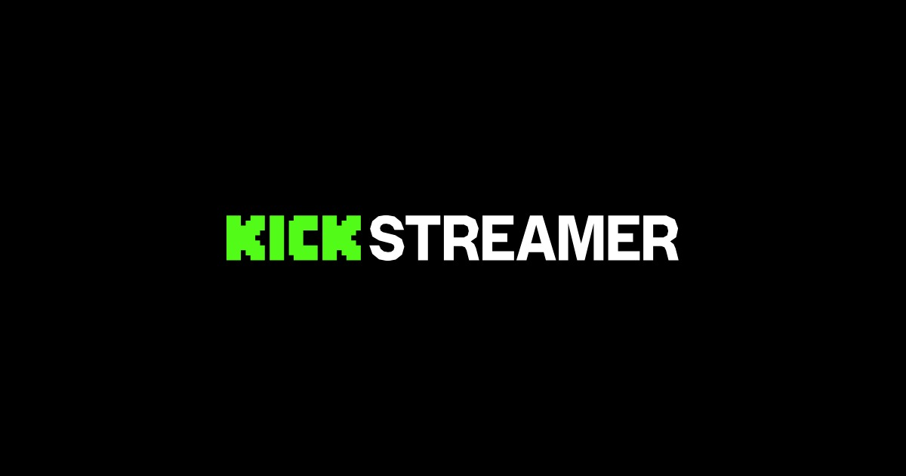

Kick
Streams en vivo · Chat activo
En vivo
Conversaciones largas
Comunidad
En Kick todo pasa sin pausa: charlas largas, chat opinando en tiempo real y temas de salud mental sin filtro. Es el espacio para hablar de lo que casi nadie dice en voz alta.
- Interacción directa con el chat.
- Momentos espontáneos, cero edición.
- Invitados y dinámicas en vivo.
